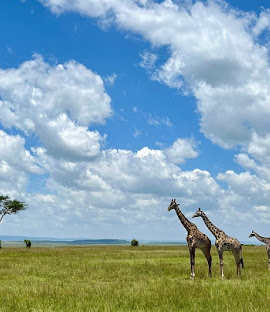
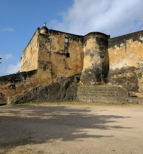
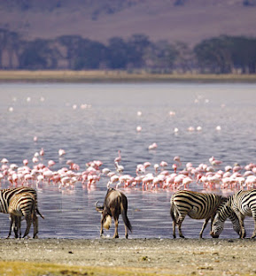

Maasai Mara

Explore and discover the great migrations of Maasai Mara
Learn MoreTembea-Kenya is a travel website that provides information about the best destinations in Kenya. We aim to help travelers explore the beauty and culture of Kenya through our curated guides and recommendations.

Explore and discover the great migrations of Maasai Mara
Learn More
The oldest city of Kenya
Learn More
The home of Flamingos
Learn MoreContact us at: elyasjimale221@gmail.com